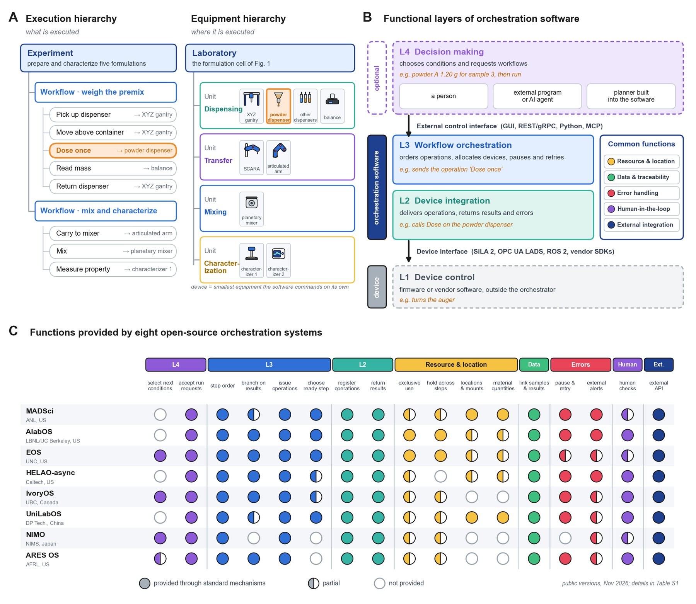

Platform · Self-driving layer
Make the cell decide for itself.
A self-driving lab is hardware plus a closed loop: devices integrated into one workflow, rehearsed in a twin, and steered by models that choose the next experiment. Choose each layer here and add it to the same cart as your hardware.
Architecture
Four layers between a goal and a dose.
The review organizes formulation SDL software into functional layers. Every part in the library maps onto one of them, so you can see what your cart still lacks.
- L4Decision makingSelect the next conditions; accept goals from people and agents.
- L3Workflow orchestrationOrder steps, branch on results, schedule concurrent workflows, track resources.
- L2Device integrationRegister device operations (SiLA 2, REST, ROS 2, MCP) and return status and data.
- L1DevicesDispensers, arms, balances and characterizers from the parts library.

L2–L3 · Orchestrate
Which orchestration system fits your workflow?
No system provides every function. Tick what your workflow needs as standard; the eight open-source systems that met the review's criteria rank themselves. A full dot counts 1, a half dot 0.5.
Twin · Rehearse
Climb the fidelity ladder only as far as you need.
Rehearse a cell before buying it. Level 1 checks timing, level 2 geometry and collisions, level 3 contact dynamics, level 4 the material itself. Higher levels cost hours per case.
L4 · Decide
Agents that help, with a person at every checkpoint.
Five agent roles from the review, ordered by how much they may do on their own. Bars show autonomy: inform, draft, act digitally, submit in approved campaigns.
Optimizers and protocols
Check your loop